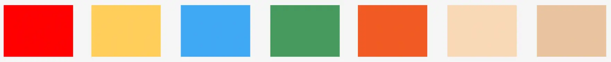

GRUNDLÆGGENDE ANIMATION
HJEMMESIDE - TheBeachWatcherUDVIKLING AF TheBeachWatcher
Ide og skitser
I den første del af temaet fokuserede jeg på udviklingen af min ide, som jeg havde fundet på
inden temaets start. Jeg eksperimenterede kort med Kryds-metoden, som blev præsenteret i
klassen. Dog fandt jeg den ikke så gavnlig, da min ide allerede var fastlagt. I
undervisningen gennemgik vi et slideshow om Game Mechanics, hvilket viste sig at være meget
gavnligt, da det tydeligt specificerede de nødvendige overvejelser i forbindelse med
spiludviklingen.
Min ide om at skabe et spil, der foregår på stranden med fokus på
indsamling af redningskranse, blev inspireret af serien Baywatch og karaktererne i denne.
Efter at have undervisning i designprincipper og karakterdesign fandt jeg ud af
at jeg ville benytte babybias i karakterdesignet for at give de menneskelige figurer i
spillet en mere blød og tegneserieagtig fremtoning, som jeg mente ville passe godt til
spillets stil, i modsætning til en mere realistisk tilgang.
Efterfølgende begyndte jeg at skitsere de forskellige elementer til spillet, herunder
baggrunde, spilelementer og UI-elementer. Jeg producerede herefter en video, der præsenterer
mine skitser og ideen til spillet. Du kan se videoen via linket øverst på siden. Formålet
med denne øvelse var at præsentere min ide og efterfølgende modtage feedback fra
mine medstuderende, hvilket jeg fandt meget gavligt i den tidlige proces.
Skitserne
udarbejdede jeg efterfølgende i Adobe Illustrator hvortil jeg brugte en farvepalette jeg
fandt passende til mit spil. At arbejde i Illustrator var en både udfordrende og lærerig
oplevelse, da jeg aldrig havde benyttet programmet tidligere. Det
krævede tid at blive fortrolig med programmet, men efter at have lært det at kende, følte
jeg mig mere sikker i brugen af det.
SKITSER OG FARVER
DIAGRAMMER, ØVELSER OG KODE
Aktivitetsdiagram
I undervisningen blev vi introduceret for UML aktivitetsdiagram, som jeg efterfølgende arbejdede med. Jeg lavede et detaljeret aktivitetsdiagram for spillet for at skitsere trinene og handlingerne i spillets forløb. Det hjalp med at klargøre, hvordan forskellige aktiviteter ville udfolde sig baseret på spillerens handlinger.
Øvelser
For at styrke min forberedelse til kodningen af spillet lavede jeg flere af de udleverede øvelser fra timerne, som svampespillet og de 16 animationer. Jeg fandt især øvelsen med de 16 forskellige animationsmetoder meget hjælpsom og jeg fik værdifuld erfaring og en nyttig forberedelse til kodningsdelen af projektet. Det gav mig en dybere forståelse af CSS-regler som translate, rotate og scale. Derefter skabte jeg spilscenen i HTML og CSS, hvor jeg indarbejdede spilelementer og UI-elementer.
State-machine diagram
Som en del af opgaven skulle jeg lave et State-machine diagram, hvortil jeg valgte version 1, som passede til mit spil. Jeg tilpassede det udleverede diagram så det passede til hvordan jeg havde planlagt kodningen af mit spil. Dette gjorde jeg ved at ændre funktionsnavne og egenskaberne i diagrammet. Senere i undervisningen lærte vi, hvordan man kunne styre disse spilelementer ved hjælp af JavaScript.
Kode
Jeg fik indsigt i at starte og stoppe animationer samt håndtere interaktionen med de forskellige typer af spilelementer, både de 'gode' og 'dårlige', når spilleren klikkede på dem. Efterfølgende blev nye elementer genereret for at fortsætte spillet. Disse funktioner, såsom `goodClickHandler`, blev udviklet til at håndtere interaktionen, når spilleren klikker på enten et godt eller et dårligt element.
`goodClickHandler` håndterer lydeffekter, opdaterer point og initierer forsvindende
animationer for det klikkede element. På samme måde er `good1Reset` og
`bad1Reset`-funktionerne designet til at blive kaldt efter interaktion med de gode eller
dårlige elementer. De fjerner de tidligere elementer fra skærmen og genererer
nye elementer med nye positioner, hvilket nulstiller spilelementerne til næste runde af
interaktion i spillet.
I spillet tilføjede vi også andre funktioner, som at optjene
point, miste liv, tabe og vinde spillet. Jeg tilføjede også
lyd til spillet og lærte hvordan man styrer lyden gennem kode i JavaScript.
Koden kan ses i billedet "JavaScript kode til spil". JavaScript
styrer lydelementet med id'et "lyd_yay" på siden. Først bliver lydens afspilningstidspunkt
nulstillet (`currentTime = 0;`), hvilket betyder, at lyden starter fra begyndelsen, selv
hvis den allerede afspilles. Derefter bliver lyden afspillet ved at bruge `play()`-metoden,
hvilket sætter lyden i gang eller genstarter den, hvis den allerede er i gang.
Hjemmsiden og reflektion
Til slut skabte jeg hjemmesiden, hvor spillet er tilgængeligt (link kan findes øverst på
denne
side). Udover selve spillet indeholder hjemmesiden min dokumentation af designprocessen,
ideudviklingen, inspiration, skitser og meget mere. Derudover inkluderede jeg en liste over
mine færdige assets, der anvendes i spillet: baggrunde, spilelementer, UI-elementer og lyde.
Inden spillet blev testet af mine medstuderende, udarbejdede jeg et spørgeskema.
Formålet med spørgeskemaet var at identificere eventuelle fejl og mangler i spillet,
som kunne forbedres. Jeg fik f.eks. et svar om at farven på kvindens ben
i spillet lignede for meget farven på sandet, som er i mellemgrunden og som hun har som
baggrund. Responsen fra spørgeskemaet gav mig værdifuld feedback med både positive og
konstruktive kommentarer, som jeg vil tage med mig i mine overvejelser næste gang, jeg
arbejder på lignende projekter.